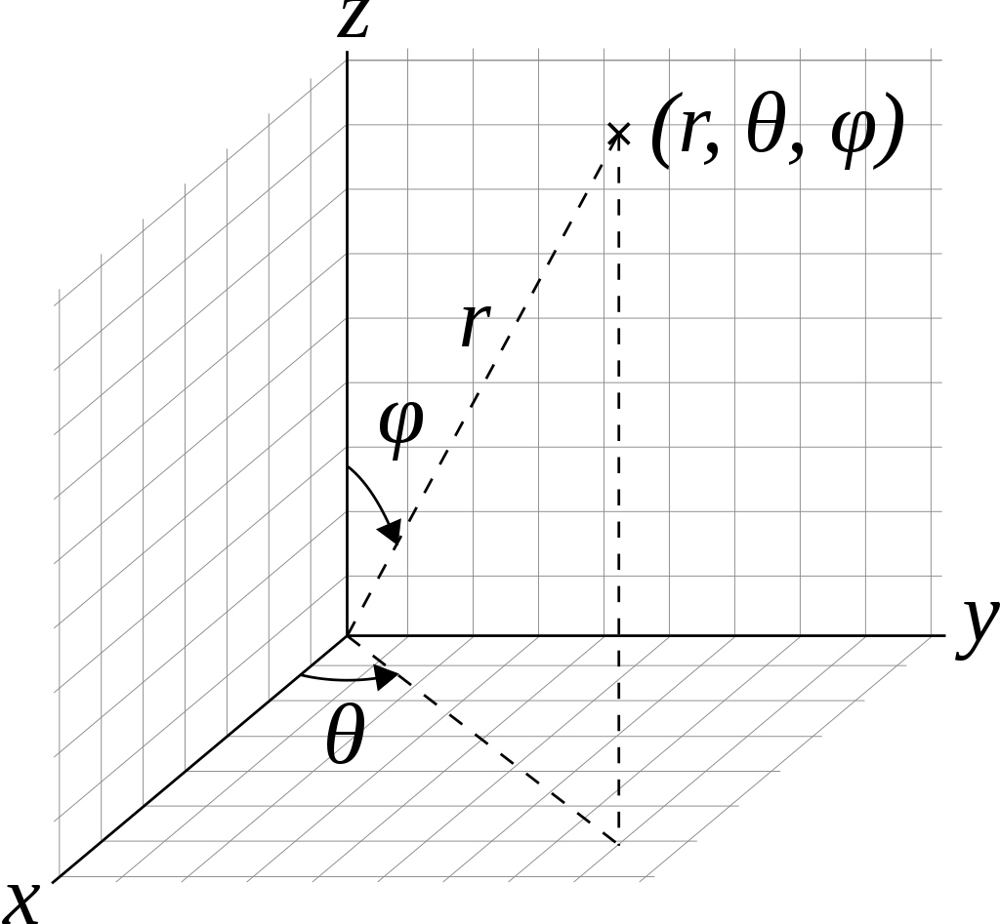
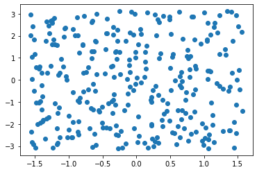
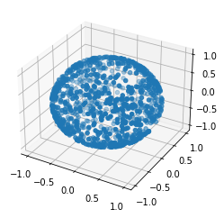
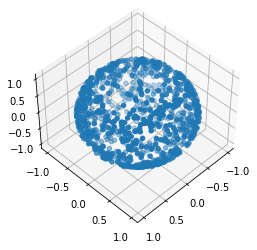
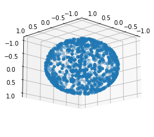
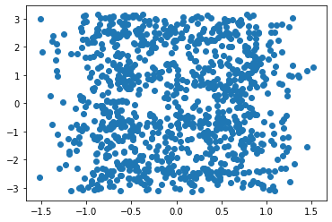
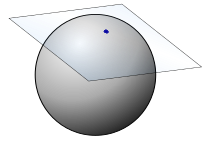

Centroid of Points on the Surface of a Sphere
I’ve written a derivation of how to find the centroid of a polygon on a sphere. This post shows it explicitly in numerical computations, and also looks at the solution in Spherical Averages and Applications to Spherical Splines and Interpolation, by Buss and Fillmore, ACM Transactions on Graphics 20, 95–126 (2001). Explicitly coding mathematics is a great exercise; having to concretely represent everything unearthed gaps in my understanding and found errors in both drafts of my derivation and the paper.
Given a set of points on a sphere we’re trying to find the point that minimises the average distance from those points, which we’ll call the centroid (or Fréchet mean).
Contents
Part 1: Calculating the centroid
- Coordinate Transformations between spherical and cartesian coordinates
- Creating Random Points on the Sphere for testing
- Geodesic Distance calculations
- Measuring the Centroid in terms of minimising the geodesic distance
- Iteratively Finding the Minimum using a closed form solution
Part 2: Implementing Buss and Filmore’s approach
- The exponential map and its inverse calculated at the North Pole
- Rotating spheres to enable moving arbitrary points to the North Pole
- Exponential map at any point
- Attempting to implement the algorithm (and failing to get it to work)
Part 3: Gradient Descent with Pytorch
Part 1: Calculating the centroid
Coordinate transformations
To do calculations on the unit sphere we’ll need some way of representing points on the sphere. There’s lots of possible representations (I normally like Stereographic Projections), but we’ll stick to two:
- Euclidean coordinate representation: (x,y,z) coordinates in 3-dimensional space.
- Latitude Longitude representation of places on a sphere.
To convert a latitude, from -π/2 to π/2 radians (i.e. 90°S to 90°N), and a longitude, from -π to π radians (i.e. 180°W to 180°E) to a coordinate we can use the following formula (see Wikipedia for the Geometry)

def latlon_to_coord(lat, lon):
return np.array([cos(lat) * cos(lon), cos(lat)*sin(lon), sin(lat)])Sanity checking coordinates
Let’s make sure this gives reasonable results simple angles
So the north pole, (0,0,1) should be at π/2 latitude
latlon_to_coord(pi/2, 0)array([6.123234e-17, 0.000000e+00, 1.000000e+00])And the south pole, (0,0,-1), at -π/2 latitude
latlon_to_coord(-pi/2, 0)array([ 6.123234e-17, 0.000000e+00, -1.000000e+00])And the point on the x-axis (1,0,0) is at 0 latitude, and by convention 0 longitude
latlon_to_coord(0, 0)array([1., 0., 0.])The y-axis is at π/2 longitude
latlon_to_coord(0, pi/2)array([6.123234e-17, 1.000000e+00, 0.000000e+00])And at π longitude we have the other side of the x axis
latlon_to_coord(0, pi)array([-1.0000000e+00, 1.2246468e-16, 0.0000000e+00])Finally at π/4 longitude we should always have the x and y components equal
latlon_to_coord(0, pi/4)array([0.70710678, 0.70710678, 0. ])latlon_to_coord(pi/4, pi/4)array([0.5 , 0.5 , 0.70710678])Inverse Transformation: Cartesian Coordinates to Latitude and Longitude
Notice the use of atan2 to get the sign right.
def coord_to_latlon(x, y, z):
assert np.all(np.abs((x*x +y*y +z*z) - 1) < 1e-5)
lat = arcsin(z)
lon = arctan2(y, x)
return np.array([lat, lon])Sanity checking coordinates
Let’s check the inverse of some of the examples above
coord_to_latlon(0,0,1)array([1.57079633, 0. ])coord_to_latlon(0,0,-1)array([-1.57079633, 0. ])coord_to_latlon(1,0,0)array([0., 0.])coord_to_latlon(0,1,0)array([0. , 1.57079633])coord_to_latlon(0,-1,0)array([ 0. , -1.57079633])coord_to_latlon(-1,0,0)array([0. , 3.14159265])coord_to_latlon(1/sqrt(2),1/sqrt(2),0)array([0. , 0.78539816])Creating Random Points on the Sphere
For testing it’s useful to be able to create random points on the sphere. In this case I don’t really care about the distribtution of the points so I will always just use a random uniform function.
I choose the coordinates as the first axis, and the points lie along the second axis. Either choice leads to awkwardness in places either in index access or broadcasting.
def random_latlon(n):
return (np.random.random_sample([2, n]) - 0.5) * np.array([pi, 2*pi])[...,None]Here are 5 points of latitude/longitude (the lat/lon is read vertically in the array below).
random_latlon(5)array([[-1.05051377, 1.51919682, 1.08064898, -0.9478646 , -0.24458294],
[ 0.51328911, -0.2909267 , 0.70478098, -0.09613048, -1.45489469]])The points are definitely in the right coordinate ranges; latitude between -pi/2 to pi/2 and longiture from -pi to pi
r = random_latlon(300)
r.min(axis=1), r.max(axis=1)(array([-1.56325868, -3.10261397]), array([1.56479825, 3.11079206]))fig, ax = plt.subplots()
plt.scatter(r[0], r[1])<matplotlib.collections.PathCollection at 0x7f9b414786d0>
Similarly we can create a random point on the sphere by making a random point in the 3 dimensional unit cube centred on the origin and projecting it. Note this will have a different distribution to the latitude longitude random points.
There is an infinitessimal chance this will blow up if we pick (0,0,0) as the random point.
def random_sphere_point(n):
ans = np.random.random_sample([3, n]) - 0.5
norm = np.sqrt((ans*ans).sum(axis=0))
return ans / norm[...,:]Here are 5 points on the sphere in Cartesian Coordinates
random_sphere_point(5)array([[-0.7474551 , -0.67828974, 0.4894528 , 0.14031347, -0.83906874],
[ 0.12810391, -0.73422057, 0.46630495, 0.00811564, 0.15397168],
[-0.65184374, -0.02903757, 0.73688239, 0.99007387, -0.52178191]])Check they actually do lie on the unit sphere - a distance of 1 from the origin.
r = random_sphere_point(1000)
norms = (r*r).sum(axis=0)
norms.max(), norms.min()(1.0000000000000004, 0.9999999999999996)I guess that looks like a sphere
fig = plt.figure()
ax = plt.axes(projection='3d')
fig
ax.scatter3D(*r)<mpl_toolkits.mplot3d.art3d.Path3DCollection at 0x7f9b3f343b80>
If we turn it a bit it still looks like a sphere
ax.view_init(45, 45)
fig
ax.view_init(165, 135)
fig
We can also project it back to lat-lon.
Notice how it’s more concentrated towards the centre because there’s actually less area in the extremites of latitude and longiture.
fig, ax = plt.subplots()
plt.scatter(*coord_to_latlon(*r))<matplotlib.collections.PathCollection at 0x7f9b3f327370>
Now let’s check that our coordinate transforms are actually inverses by checking a bunch of random points.
It looks like the coordinate transforms are really inverses
def distance(x, y, axis=0):
return sqrt((np.power(x - y, 2)).sum(axis=axis))r = random_latlon(1000)
rr = coord_to_latlon(*latlon_to_coord(*r))
distance(rr, r).max()5.484501741648273e-14r = random_sphere_point(1000)
rr = latlon_to_coord(*coord_to_latlon(*r))
distance(rr, r).max()1.3087313122991207e-15Geodesic Distance
I claim that the geodesic distance of two points on a sphere is the arccos of the dot product of the vectors that make them.
According to Wikipedia the distance between two points is:
\[\Delta\sigma = \arccos\bigl(\sin\phi_1\sin\phi_2 + \cos\phi_1\cos\phi_2\cos(\Delta\lambda)\bigr).\]
Where \(\lambda_1, \phi_1\) and \(\lambda_2, \phi_2\) are the longitude and latitude respectively.
Although this is numerically unstable let’s check this to see if we’re in the right ballpark
lat1, lon1 = random_latlon(10)
lat2, lon2 = random_latlon(10)def latlon_geodist(lat1, lon1, lat2, lon2):
return arccos(sin(lat1) * sin(lat2) + cos(lat1) * cos(lat2) * cos(lon2 - lon1))Let’s do some sanity checking
Points at the same place should be 0 distance
latlon_geodist(lat1, lon1, lat1, lon1)<ipython-input-34-30a781f9625f>:2: RuntimeWarning: invalid value encountered in arccos
return arccos(sin(lat1) * sin(lat2) + cos(lat1) * cos(lat2) * cos(lon2 - lon1))
array([0.00000000e+00, 1.49011612e-08, 0.00000000e+00, 0.00000000e+00,
0.00000000e+00, 0.00000000e+00, 0.00000000e+00, nan,
0.00000000e+00, 0.00000000e+00])It’s possible to get a nan due to floating point error. This rounds up to just over 1 which is just outside the bounds of arccos.
lat, lon = (-1.129680862943046, -1.4351343458834227)
sin(lat) * sin(lat) + cos(lat) * cos(lat) * cos(lon - lon)1.0000000000000002Let’s hack this a little to make it more stable
def latlon_geodist(lat1, lon1, lat2, lon2, eps = 1e-6):
dotprod = sin(lat1) * sin(lat2) + cos(lat1) * cos(lat2) * cos(lon2 - lon1)
assert ((-1 - eps) <= dotprod).all() and (dotprod <= (1 + eps)).all()
dotprod = dotprod.clip(-1, 1)
return arccos(dotprod)latlon_geodist(lat, lon, lat, lon)0.0The distance between the equator and the north pole should be pi/2
latlon_geodist(0, 0, pi/2, 0)1.5707963267948966The distance between antipodal points should be pi
latlon_geodist(-pi/2, 0, pi/2, 0)3.141592653589793latlon_geodist(0, 0, 0, pi)3.141592653589793latlon_geodist(0, -pi/2, 0, pi/2)3.141592653589793Now compare the geodistance with the arccos of the dot product
dist = latlon_geodist(lat1, lon1, lat2, lon2)
distarray([2.46947963, 2.49913914, 1.46664046, 1.17041288, 0.37746113,
2.16346273, 1.00909388, 0.48192531, 2.53874702, 2.6748886 ])p = latlon_to_coord(lat1, lon1)
q = latlon_to_coord(lat2, lon2)dist2 = arccos((p*q).sum(axis=0))
dist2array([2.46947963, 2.49913914, 1.46664046, 1.17041288, 0.37746113,
2.16346273, 1.00909388, 0.48192531, 2.53874702, 2.6748886 ])They agree to the order of floating point error.
(dist - dist2).max()0.0Let’s capture that in a function, again making sure to bound the elements to deal with floating point errors.
def geodist(x, y, eps=1e-6):
dotprod = y.T @ x
assert ((-1 - eps) <= dotprod).all() and (dotprod <= (1 + eps)).all()
dotprod = dotprod.clip(-1, 1)
return np.arccos(dotprod)[geodist(pi, qi) for pi, qi in zip(p.T, q.T)] - distarray([0., 0., 0., 0., 0., 0., 0., 0., 0., 0.])In our function x can also be a collection of points:
q0 = np.array(q)[:,0]
q0array([ 0.31287334, -0.20532369, -0.92733622])[geodist(pi, q0) for pi in p.T][2.469479630515192,
0.40323027521610894,
1.4920173306523,
1.9558900601514497,
2.7359590483860647,
2.1462847027999032,
0.7043405473704512,
2.7367906455922415,
0.9539342223012038,
1.2027484136227085]geodist(p, q0)array([2.46947963, 0.40323028, 1.49201733, 1.95589006, 2.73595905,
2.1462847 , 0.70434055, 2.73679065, 0.95393422, 1.20274841])They can also both be arrays in which case all pairing are calculated.
geodist(p, q)[:,0]array([2.46947963, 0.34759067, 2.38907755, 0.89968604, 0.26041626,
2.60671514, 1.83068643, 0.26215902, 1.62594305, 0.35150679])Measuring the Centroid
Suppose we have a bunch of points on the sphere, the centroid is the point that minimises the total (or equivalently average) distance from that point to all other points.
Let’s try to find the centroid of 4 points.
m = random_sphere_point(1)[:,0]
ps = random_sphere_point(4)
m, ps(array([ 0.61804667, -0.76357346, -0.18701308]),
array([[ 0.93870158, -0.44268846, 0.68158944, -0.79466137],
[-0.3443822 , -0.70496228, 0.34836305, -0.04389649],
[ 0.01549958, 0.55412554, 0.64348973, -0.60546379]]))dists = geodist(ps, m)
distsarray([0.57310037, 1.40903212, 1.53587692, 1.92238526])dists.mean()1.3600986701826971lats, lons = coord_to_latlon(*ps)
mlat, mlon = coord_to_latlon(*m)dists2 = latlon_geodist(lats, lons, mlat, mlon)
dists2array([0.57310037, 1.40903212, 1.53587692, 1.92238526])dists2.mean()1.3600986701826971The centroid minimises average distance.
We’ll create a function that takes a collection of potential centroids to calculate the average distance from.
m[:,None]array([[ 0.61804667],
[-0.76357346],
[-0.18701308]])m.shape(3,)ps.shape(3, 4)def avg_distance(ps, m):
# Allow m to be a vector *or* a matrix
if len(m.shape) == 1:
m = m[:, None]
return geodist(ps, m).mean(axis=1)avg_distance(ps, m)array([1.36009867])Let’s do a random search for the centroid of the ps
m = random_sphere_point(50000)distances = avg_distance(ps, m)
distancesarray([1.87538182, 1.72981518, 1.83908373, ..., 1.53442742, 1.54397244,
1.64161356])Clearly the minimum must be lower than this.
m[:,distances.argmin()], distances.min(), distances.max()(array([-0.43100664, -0.70535782, 0.56276427]),
1.2565096068989563,
1.8852477691126441)Let’s just check it’s on the unit sphere.
min_point = m[:,distances.argmin()]
(min_point * min_point).sum()0.9999999999999998In the notion parallax article the second suggestion is to project the average vector (which he says doesn’t seem quite right).
We can check this explicity by calculating that projection.
avg = ps.sum(axis=1)
avg = avg / np.sqrt((avg*avg).sum())
meanpoint_dist = avg_distance(ps, avg[:,None])
avg, meanpoint_dist, meanpoint_dist <= distances.min()(array([ 0.37007754, -0.7198562 , 0.58723902]),
array([1.29459946]),
array([False]))Iteratively finding the minimum
As I derived in finding the Centroid of a Spherical Polygon it occurs where
\[c = k \sum_{i=1}^{N} \frac{p_i}{\sqrt{1 - (c \cdot p_i)^2}}\]
We can evaluate this iteratively and hope that it converges to the minimum.
def improve_centroid(c, ps):
ans = (ps / sqrt(1 - np.power(c@ps, 2))).sum(axis=-1)
norm = sqrt(ans @ ans)
return ans / normimprove_centroid(avg, ps)array([ 0.23688037, -0.81413966, 0.53015498])def fixpoint(f, x0, eps=1e-5, maxiter=1000, **kwargs):
for _ in range(maxiter):
x = f(x0, **kwargs)
if distance(x, x0) < eps:
return x
x0 = x
raise Exception("Did not converge")def spherical_centroid(ps, eps=1e-5, maxiter=10000):
return fixpoint(improve_centroid, np.zeros((3,)), ps=ps, eps=eps, maxiter=maxiter)fix = spherical_centroid(ps)
fixarray([-0.442657 , -0.70497373, 0.5541361 ])This does seem to be lower than any of our random points
dmin = avg_distance(ps, fix)
dmin, dmin <= distances.min()(array([1.2554998]), array([ True]))Another good check is to see whether moving a small distance around this point increases the distance.
(Note the small distance needs to be a bit bigger than our eps above in deciding convergence)
fix_latlon = coord_to_latlon(*fix)eps = 1e-4
xeps = np.array([eps, 0])
yeps = np.array([0, eps])
perturbations = np.array([latlon_to_coord(*(fix_latlon + x)) for x in
[0, xeps, -xeps, yeps, -yeps]]).T
perturbationsarray([[-0.442657 , -0.44262753, -0.44268646, -0.4425865 , -0.44272749],
[-0.70497373, -0.7049268 , -0.70502066, -0.705018 , -0.70492947],
[ 0.5541361 , 0.55421934, 0.55405286, 0.5541361 , 0.5541361 ]])The minimum occurs at the first point, with no perturbation.
avg_distance(ps, perturbations)array([1.2554998 , 1.25551318, 1.2555215 , 1.25550478, 1.25551945])avg_distance(ps, perturbations).argmin()0Part 2: Recreating Buss and Filmore’s Approach
The exponential map and its inverse
In the Buss and Filmore paper they talk about the exponential map and its inverse at the point (0,0,1). The idea is that we are building a correspondence between moving in the tangent plane and moving in the sphere itself in a way that preserves distances. Really this is just a special sort of parameterisation of the sphere that preserves distances.

The exponential map from the north pole takes an (x,y) point on that plane and returns an (x,y,z) coordinate on the sphere’s surface.
They give the formula (bottom of page 11):
\[\exp_{(0,0,1)} (x, y) = (x \frac{\sin r}{r}, y \frac{\sin r}{r}, \cos{r})\]
Where \(r = \sqrt{x^2 + y^2}\) is the distance of the point on the tangent plane from where it touches the sphere.
In code (using sinc for numerical stability at 0)
def exp_northpole(x, y):
r = sqrt(x*x + y*y)
sincr = sinc(r/np.pi)
return (x * sincr, y * sincr, cos(r))So at the origin we should get the north pole
exp_northpole(0,0)(0.0, 0.0, 1.0)And if we move forward a bit in the x direction on the tangent plane we move along the x-axis in 3 space the same distance.
q = np.array([0,0,1])
p = exp_northpole(0.5,0)
p, geodist(p, q)((0.479425538604203, 0.0, 0.8775825618903728), 0.4999999999999999)And similar for the y-axis
q = np.array([0,0,1])
p = exp_northpole(0.0,0.3)
p, geodist(p, q)((0.0, 0.29552020666133955, 0.955336489125606), 0.30000000000000016)And if we move (0.3, -0.4) which by Pythagoras is a distance of 0.5
q = np.array([0,0,1])
p = exp_northpole(0.3,-0.4)
p, geodist(p, q)((0.2876553231625218, -0.3835404308833624, 0.8775825618903728),
0.4999999999999999)Notice that we can wrap around the sphere
exp_northpole(0, np.pi)(0.0, 1.2246467991473532e-16, -1.0)exp_northpole(0, 2*np.pi)(-0.0, -2.4492935982947064e-16, 1.0)exp_northpole(0, 4*np.pi)(-0.0, -4.898587196589413e-16, 1.0)The inverse of the exponential map
It’s easy to calculate the inverse of the exponential map at the north pole, which they call l (for log), and they have the formula on page 12:
\[l_{(0,0,1)}(x, y, z) = \left(x \frac{\theta}{\sin(\theta)}, y \frac{\theta}{\sin(\theta)}\right)\]
Where \(\theta = \cos^{-1}(z)\).
def log_northpole(x, y, z):
theta = arccos(z)
sinc_theta = sinc(theta / np.pi)
return (x / sinc_theta, y/ sinc_theta)First we should see the north pole itself should map to the origin
log_northpole(0,0,1)(0.0, 0.0)We can check a few points and that distances are preserved, e.g. the equator is a distance pi/2 away
log_northpole(0,1,0)(0.0, 1.5707963267948966)log_northpole(1,0,0)(1.5707963267948966, 0.0)And this point is pi/4 from the north pole
log_northpole(1/sqrt(2),0,1/sqrt(2))(0.7853981633974483, 0.0)The mapping fails at the south pole (because the exponential map can’t make it there). This should actually be the point at infinity.
log_northpole(0,0,-1)(0.0, 0.0)But it should be a real inverse:
If we take points on the sphere they should go back to where they started
ps = random_sphere_point(5)
distance(ps, exp_northpole(*log_northpole(*ps)))array([2.02487339e-15, 1.02967200e-15, 5.55111512e-17, 0.00000000e+00,
0.00000000e+00])Now the inverse will only work if we don’t wrap around the sphere; that is we need to move less than pi in any direction.
npoint = 5
length = np.random.random(npoint) * pi
direction = np.random.random(npoint) * 2 * pi
xs, ys = length * cos(direction), length * sin(direction)
ts = np.array([xs, ys])
tsarray([[-0.04616066, -0.17607737, 0.53101022, -0.07972639, 0.45558742],
[ 0.13898508, -0.86137675, -2.0428374 , -3.04819971, 1.10504611]])distance(ts, log_northpole(*exp_northpole(*ts)))array([0.00000000e+00, 0.00000000e+00, 0.00000000e+00, 1.46600946e-14,
0.00000000e+00])Rotating Spheres
The paper doesn’t have a formula for the exponential map and its inverse at other points, but we can work it out by rotating the sphere and then rotating it back. This is inefficient, but gets us the right answer.
First we need a way of rotating the sphere. This is surpisingly complicated, but given an axis represented by unit vector u and an angle theta we can do a rotation with the following matrix:
\[R = \begin{bmatrix} \cos \theta +u_x^2 \left(1-\cos \theta\right) & u_x u_y \left(1-\cos \theta\right) - u_z \sin \theta & u_x u_z \left(1-\cos \theta\right) + u_y \sin \theta \\ u_y u_x \left(1-\cos \theta\right) + u_z \sin \theta & \cos \theta + u_y^2\left(1-\cos \theta\right) & u_y u_z \left(1-\cos \theta\right) - u_x \sin \theta \\ u_z u_x \left(1-\cos \theta\right) - u_y \sin \theta & u_z u_y \left(1-\cos \theta\right) + u_x \sin \theta & \cos \theta + u_z^2\left(1-\cos \theta\right) \end{bmatrix}\]
def rot_matrix(u, t):
ux, uy, uz = u
cost = cos(t)
sint = sin(t)
return np.array([
[cost+ux*ux*(1-cost), ux*uy*(1-cost)-uz*sint, ux*uz*(1-cost)+uy*sint],
[uy*ux*(1-cost)+uz*sint, cost+uy*uy*(1-cost), uy*uz*(1-cost)-ux*sint],
[uz*ux*(1-cost)-uy*sint, uz*uy*(1-cost)+ux*sint, cost+uz*uz*(1-cost)],
])Sanity checking: A rotation of 0 should be identity
rot_matrix(random_sphere_point(1)[:,0],0)array([[ 1., -0., 0.],
[ 0., 1., -0.],
[ 0., 0., 1.]])A rotation about the z-axis should be in the xy-plane
rot_matrix((0,0,1), pi/6)array([[ 0.8660254, -0.5 , 0. ],
[ 0.5 , 0.8660254, 0. ],
[ 0. , 0. , 1. ]])And reversing the axis should reverse the rotation
rot_matrix((0,0,-1), pi/6)array([[ 0.8660254, 0.5 , 0. ],
[-0.5 , 0.8660254, 0. ],
[ 0. , 0. , 1. ]])And similarly a rotation about the x-axis should be in the y-z plane
rot_matrix((1,0,0), pi/6)array([[ 1. , 0. , 0. ],
[ 0. , 0.8660254, -0.5 ],
[ 0. , 0.5 , 0.8660254]])Let’s check a random rotation
axis = random_sphere_point(1)[:,0]
angle = np.random.random_sample(1)[0] * pi
axis, angle(array([ 0.39320147, -0.03521715, 0.91877764]), 0.8930289746904281)R = rot_matrix(axis, angle)Rotating the oposite way should invert it
Rinv = rot_matrix(axis, -angle)This should be the identity matrix
R @ Rinvarray([[ 1.00000000e+00, 2.28238442e-17, -2.96906906e-17],
[ 2.28238442e-17, 1.00000000e+00, -3.30265999e-17],
[-2.96906906e-17, -3.30265999e-17, 1.00000000e+00]])Rinv @ Rarray([[ 1.00000000e+00, 9.75220593e-17, -7.54846245e-17],
[ 9.75220593e-17, 1.00000000e+00, -3.69276604e-17],
[-7.54846245e-17, -3.69276604e-17, 1.00000000e+00]])Let’s rotate some random points and check if it preserves distances
p1, p2 = random_sphere_point(2).T
p1, p2(array([ 0.84651763, -0.45095389, -0.2829284 ]),
array([ 0.07670365, -0.73056703, -0.67851925]))geodist(p1, p2)0.944244049404823geodist(R@p1, R@p2)0.9442440494048231Rotating to the north pole
If we want to rotate a point to the north pole we can:
- Find the plane containing the centre of the sphere, the point and the north pole
- Find an axis perpendicular to that plane
- Calculate the angle between the sphere and the point
- Rotate along that axis by that angle (being careful about orientation)
There’s an easy way to calculate the perpendicular axis to two vectors in 3 dimensions; the cross product (or for differential geometers the hodge dual of the wedge product).
I always remember the definition of the cross product by the mnemonic xyzxyz; e.g. the first xyz tells us the x component is yz-zy, then we go a letter across to yzx and so the y component is zx-xz and finally for the z component.
def cross_product(u, v):
ux,uy,uz = u
vx,vy,vz = v
return (uy*vz-uz*vy, uz*vx-ux*vz, ux*vy - uy*vx)Let’s check a random example:
cross_product((2,3,4) , (5,6,7))(-3, 6, -3)Now we can use this to calculate a unit perpendicular vector
def norm(x, axis=0):
return np.sqrt((x*x).sum(axis=axis))def unit_perp(u, v):
v = np.array(cross_product(u, v))
return v / norm(v)unit_perp((2,3,4) , (5,6,7))array([-0.40824829, 0.81649658, -0.40824829])north_pole = np.array((0,0,1))def perp_to_north_pole(v):
# Special handling for north/south pole here
# Note the order is important for orientation
return unit_perp(v, north_pole)perp_to_north_pole((1,0,0))array([ 0., -1., 0.])perp_to_north_pole((0,1,0))array([1., 0., 0.])perp_to_north_pole((0,1/np.sqrt(2),1/np.sqrt(2)))array([1., 0., 0.])Of course this will all explode if the two vectors are parallel (since then there’s a whole plane of potential orthogonal vectors, you need to break the symmetry).
perp_to_north_pole((0,0,1)), perp_to_north_pole((0,0,-1))<ipython-input-112-372364f14156>:3: RuntimeWarning: invalid value encountered in true_divide
return v / norm(v)
(array([nan, nan, nan]), array([nan, nan, nan]))def angle_to_north_pole(v, axis=0):
return np.arccos((north_pole * v).sum(axis=axis))Check some basic examples
angle_to_north_pole(np.array((0,0,1)))0.0angle_to_north_pole(np.array((0,0,-1)))3.141592653589793angle_to_north_pole(np.array((0,1,0)))1.5707963267948966angle_to_north_pole(np.array((1/sqrt(2),1/sqrt(2),0)))1.5707963267948966angle_to_north_pole(np.array((0, 1/sqrt(2),1/sqrt(2))))0.7853981633974484Lets check the rotation in action
p = random_sphere_point(1)[:,0]
parray([-0.29445315, -0.46089653, -0.83718082])theta = angle_to_north_pole(p)
axis = perp_to_north_pole(p)
axis, theta(array([-0.84270333, 0.53837821, 0. ]), 2.562904446655308)Check that it’s perpendicular and of unit norm
(axis * north_pole).sum(), (axis * p).sum(), (axis * axis).sum()(0.0, 0.0, 1.0)R = rot_matrix(axis, -theta)And indeed it rotates to the north pole
distance(R @ p , north_pole)1.0938523993656688Exponential map at any point
Now we can take the exponential map at any point by first rotating to the north pole, calculating the exponential map, and then rotating back.
Let’s take some point on the sphere
p = random_sphere_point(1)[:,0]
parray([-0.52085469, -0.70958405, 0.47455333])And a random point on its tangent plane (not too far from the origin)
max_dist = pi
length = np.random.random(1) * max_dist
direction = np.random.random(1) * 2 * np.pi
tx, ty = length * cos(direction), length * sin(direction)
tx, ty(array([-1.23956389]), array([1.68843737]))Let’s rotate it to the north pole
theta = angle_to_north_pole(p)
axis = perp_to_north_pole(p)
axis, theta(array([-0.80613779, 0.59172786, 0. ]), 1.076339808354696)rot_matrix(axis, theta) @ parray([8.32667268e-17, 0.00000000e+00, 1.00000000e+00])The tangent plane doesn’t change it’s coordinatisation, so we can just calculate the exponential map.
q_rot = exp_northpole(tx, ty)
q_rot(array([-0.51244602]), array([0.69801406]), array([-0.50017542]))The distance is preserved by the exponential map
geodist(np.array([0,0,1]), np.array(q_rot)), np.sqrt(tx**2 + ty**2)(array([2.09459767]), array([2.09459767]))And now we need to rotate the sphere back
q = rot_matrix(axis, -theta) @ q_rot
qarray([[-0.33260114],
[ 0.94302493],
[-0.00897019]])And we check the distances are preserved
geodist(p, q), np.sqrt(tx**2 + ty**2)(array([2.09459767]), array([2.09459767]))Putting this all together we get a function that calculates the expoential map at point p on the sphere, for vector t in its tangent space.
def exp(p, t):
tx, ty = t
theta = angle_to_north_pole(p)
axis = perp_to_north_pole(p)
q_rot = exp_northpole(tx, ty)
q = rot_matrix(axis, -theta) @ q_rot
return qq = exp(p, (tx, ty))
qarray([[-0.33260114],
[ 0.94302493],
[-0.00897019]])geodist(p, q), sqrt(tx*tx + ty*ty)(array([2.09459767]), array([2.09459767]))Inverse expoenential map at any point
The logic is essentially the same for the inverse map, which we call log, except we perform the rotation before we apply the map.
def log(p, q):
theta = angle_to_north_pole(p)
axis = perp_to_north_pole(p)
q_rot = rot_matrix(axis, theta) @ q
t = log_northpole(*q_rot)
return tSo at any point p the log should be the inverse of exp
t = np.array([tx,ty])t, log(p, exp(p, t))(array([[-1.23956389],
[ 1.68843737]]),
(array([-1.23956389]), array([1.68843737])))q = random_sphere_point(1)[:,0]
qarray([0.21868918, 0.77422052, 0.59393403])exp(p, log(p, q))array([0.21868918, 0.77422052, 0.59393403])Attempting to Implement Algorithm A1
We finally have all the pieces we need to implement algorithm A1 on page 23 of the paper, at least for the special case d=2 and weights all equal to 1/n.
Algorithm A1:
Inputs: Points p1, ..., pn on S^d
Non-negative weights w1, ..., wn with sum 1.
Output: The spherical weighted average of the inputs.
Initialization: Set q := sum(w * p) / norm(sum(w * p))
Main Loop:
For i = 1, ..., n
Set p_i* := log(q, p_i)
Set u := sum(w_i * (p_i* - q), i=1..n)
Set q := exp(q, q + u).
If norm(u) is sufficiently small, output q and halt.
Otherwise continue looping.ps = random_sphere_point(4)def average_projection(ps, axis=-1):
avg = ps.mean(axis=axis)
n = norm(avg)
return avg/nq = average_projection(ps)
qarray([-0.96262568, 0.25959003, 0.07723227])avg_distance(ps, q)array([0.94612087])p_tangent = np.array(log(q, ps))
p_tangentarray([[-0.95857123, 0.61845951, -0.00271409, -0.10243155],
[ 1.59888405, 0.20774684, -0.09692084, -1.16640361]])Note in u := sum( w_i * (p_i* - q)) the q is actually the projection of q into the tangent space, which is the origin. When the weights are equal this reduces to the mean.
So this reduces to u := 1/n sum(p_i)
u = p_tangent.mean(axis=1)
uarray([-0.11131434, 0.13582661])q2 = exp(q, u)avg_distance(ps, q2)array([0.99423434])Let’s wrap this up in a function.
def step_A1(q, ps):
p_tangent = np.array(log(q, ps))
u = p_tangent.mean(axis=1)
return exp(q, u)def alg_A1(ps, eps=1e-5, maxiter=1000):
return fixpoint(step_A1, average_projection(ps), ps=ps, eps=eps, maxiter=maxiter)a1 = alg_A1(ps)
a1array([-0.93352393, 0.3425671 , -0.10573959])avg_distance(ps, a1)array([1.00335339])It has converged
p_tangent = np.array(log(a1, ps))
p_tangent.mean(axis=1)array([-1.85819581e-06, -5.84658255e-07])Something is wrong; I can actually find a closer point with random search, or my previous implementation!
I’m not sure whether I implemented the algorithm incorrectly, or whether the algorithm itself is incorrect.
avg_distance(ps, random_sphere_point(10000)).min(), avg_distance(ps, spherical_centroid(ps))(0.9329403881785946, array([0.9276463]))What’s going on here?
Checking the code
Ideally I’d compare it with the results of their C++ code but running gcc I get a bunch of errors that would take me some time to debug
> gcc SphereMean.cpp
In file included from SphereMean.h:32,
from SphereMean.cpp:28:
../VrMath/LinearR4.h:207:7: warning: extra qualification ‘Matrix4x4::’ on member ‘operator*=’ [-fpermissive]
207 | void Matrix4x4::operator*= (const Matrix4x4& B); // Matrix product
| ^~~~~~~~~
SphereMean.cpp: In function ‘Quaternion ComputeMeanQuat(long int, const Quaternion*, const double*, double, double)’:
SphereMean.cpp:236:34: error: no matching function for call to ‘VectorR4::VectorR4(const Quaternion&)’
236 | vvArray[i] = VectorR4( *(qq+i) );
| ^
In file included from SphereMean.h:32,
from SphereMean.cpp:28:
../VrMath/LinearR4.h:73:2: note: candidate: ‘VectorR4::VectorR4(double, double, double, double)’
73 | VectorR4( double xVal, double yVal, double zVal, double wVal )
| ^~~~~~~~
../VrMath/LinearR4.h:73:2: note: candidate expects 4 arguments, 1 provided
../VrMath/LinearR4.h:72:2: note: candidate: ‘VectorR4::VectorR4()’
72 | VectorR4( ) : x(0.0), y(0.0), z(0.0), w(0.0) {}
| ^~~~~~~~
../VrMath/LinearR4.h:72:2: note: candidate expects 0 arguments, 1 provided
../VrMath/LinearR4.h:55:7: note: candidate: ‘constexpr VectorR4::VectorR4(const VectorR4&)’
55 | class VectorR4 {
| ^~~~~~~~
../VrMath/LinearR4.h:55:7: note: no known conversion for argument 1 from ‘const Quaternion’ to ‘const VectorR4&’
../VrMath/LinearR4.h:55:7: note: candidate: ‘constexpr VectorR4::VectorR4(VectorR4&&)’
../VrMath/LinearR4.h:55:7: note: no known conversion for argument 1 from ‘const Quaternion’ to ‘VectorR4&&’
Checking the proof
They claim that in Theorem 3, that by Lemma 2a that a spherical centroid will be a centroid in the tangent space.
I’m having a lot of trouble following their proof because they change and introduce notation so quickly, but we can try to validate this claim.
c = spherical_centroid(ps)It doesn’t seem to be the case
np.array(log(c, ps)).mean(axis=1)array([-0.14373332, 0.20639589])However it does preserve distances, so it seems likely to be the correct exponential map
np.sqrt((np.array(log(c, ps)) * np.array(log(c, ps))).sum(axis=0)).mean()0.9276463013575129avg_distance(ps, c)array([0.9276463])np.array(log(c, ps)).mean(axis=1)array([-0.14373332, 0.20639589])avg_distance(ps, c)array([0.9276463])Outline of a method of checking
I think there’s a way we could check this, but I have not taken the time to implement it.
The stereographic projection about any point, and it’s inverse, are straightforward to implement with standard geometry of points, lines and spheres. Some geometry shows that the stereographic projection of a circle maps the angle t to a point 2 tan(t/2). So it follows that composing the stereographic projection by a function f(x) = 2 arctan(x/2) should give the exponential map.
We would check this gives the same results as above.
Using Pytorch we could start with latitude and longitude (as below) and project to cartesian coordinates and apply the inverse exponential map to get to the tangent plane. Then we could check the formulas of lemma 2a.
Part 3: Gradient Descent With Pytorch
Gradient Descent
At the end of the day the paper’s approach was just a form of gradient descent (which I couldn’t get working). But we can get an autograd library, like that in Pytorch, to calculate the gradients for us. The only trick here is we need to choose sphere coordinates (otherwise it will tell us to go off the sphere, unless we use Lagrange multipliers).
import torchdef torch_latlon_geodist(lat1, lon1, lat2, lon2):
return torch.arccos(torch.sin(lat1) * torch.sin(lat2) + torch.cos(lat1) * torch.cos(lat2) * torch.cos(lon2 - lon1))latlon_ps = torch.tensor(coord_to_latlon(*ps))
latlon_pstensor([[-0.7885, 0.6007, 0.0995, 0.1919],
[ 0.9673, 2.4580, 2.9729, -2.2270]], dtype=torch.float64)def centroid_gradient_descent(c, ps, lr=0.1):
dist = torch_latlon_geodist(*c, *ps).mean()
dist.backward()
with torch.no_grad():
c -= lr * c.grad
c.grad.zero_()
return c, dist.item()def centroid_sphere_gd(ps, eps=1e-6, max_iter=1000, lr=0.01):
c = ps.mean(axis=1).requires_grad_()
dist = None
for _ in range(max_iter):
last_dist = dist
c, dist = centroid_gradient_descent(c, ps, lr=lr)
if last_dist and abs(dist - last_dist) < eps:
return c.requires_grad_(False)
raise Exception("Did not converge")Using torch gradient descent
c2 = centroid_sphere_gd(latlon_ps)
c2tensor([0.1012, 2.9704], dtype=torch.float64)c2c = latlon_to_coord(*np.array(c2))
c2c, avg_distance(ps, c2c)(array([-0.98034083, 0.16950631, 0.1009924 ]), array([0.92810049]))c2.requires_grad_()tensor([0.1012, 2.9704], dtype=torch.float64, requires_grad=True)dist = torch_latlon_geodist(*c2, *latlon_ps).mean()
dist.backward()torch_latlon_geodist(*latlon_ps, *c2).mean()tensor(0.9281, dtype=torch.float64, grad_fn=<MeanBackward0>)Closely matches our original function
c = spherical_centroid(ps)
c, avg_distance(ps, c)(array([-0.98093006, 0.16703028, 0.09938358]), array([0.9276463]))